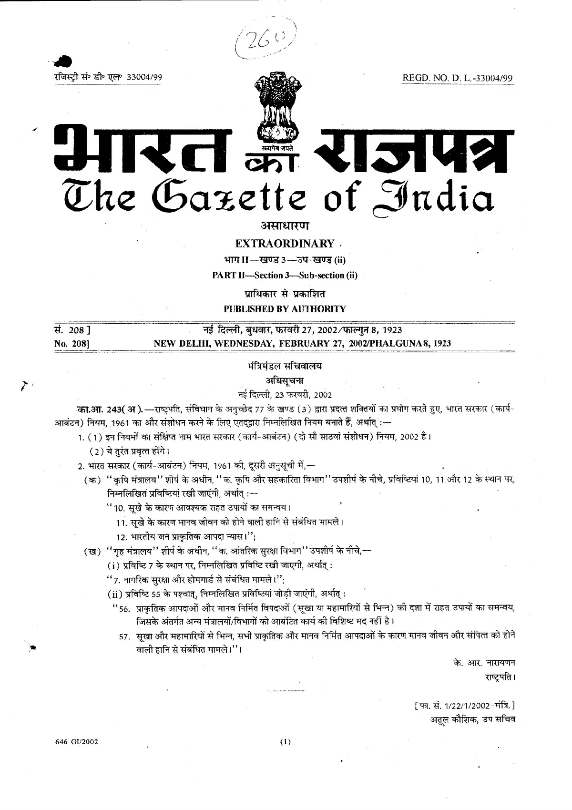
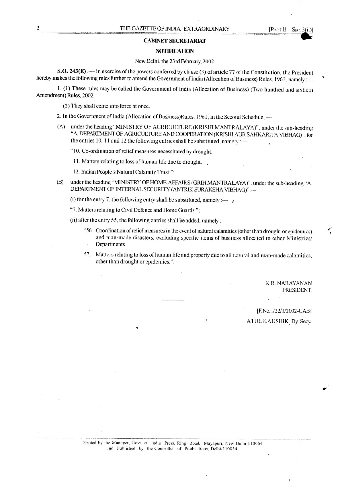

Amendment #260 (S.O. 243(E), 2002)
3 changes: 0 to the First Schedule, 3 to the Second Schedule. 2 applied1 not applied
The order, page by page
Page 1 of 2

Page 2 of 2

123Schedule 2 › MINISTRY OF AGRICULTURE › DEPARTMENT OF AGRICULTURE AND COOPERATION › entry 10; Schedule 2 › MINISTRY OF AGRICULTURE › DEPARTMENT OF AGRICULTURE AND COOPERATION › entry 11; Schedule 2 › MINISTRY OF AGRICULTURE › DEPARTMENT OF AGRICULTURE AND COOPERATION › entry 12
- 10. Co-ordination of relief measures necessitated by drought.
- 11. Matters relating to loss of human life due to drought.
- 12. Indian People's Natural Calamity Trust.
applied at schedule 2 › ministry MINISTRY OF AGRICULTURE › department A › part I › entry 10 in the Rules after #260
Schedule 2 › MINISTRY OF HOME AFFAIRS › DEPARTMENT OF INTERNAL SECURITY › entry 7
- 7. Matters relating to Civil Defence and Home Guards.
applied at schedule 2 › ministry MINISTRY OF HOME AFFAIRS › department A › group_heading I › entry 7 in the Rules after #260
after Schedule 2 › MINISTRY OF HOME AFFAIRS › DEPARTMENT OF INTERNAL SECURITY › entry 55
- 56. Coordination of relief measures in the event of natural calamities (other than drought or epidemics) iand man-made disasters, excluding specific items of business allocated to other Ministries/ Departments.
- 57. Matters relating to loss of human life and property due to all natural and man-made calamities. other than drought or epidemics.
not applied (the change could not be placed in the Rules as read; see How this document was read)
How this document was read
Known issues
| Change | Issue | Known as |
|---|---|---|
| 3 | change 3: no entry 55 under schedule 2 › ministry MINISTRY OF HOME AFFAIRS › department A | Entries not in the state |
From the Government of India (Allocation of Business) Rules, 1961 and their amendments, as published by the Cabinet Secretariat (cabsec.gov.in), read by orgpedia. The readings of the older scanned gazettes have known gaps.